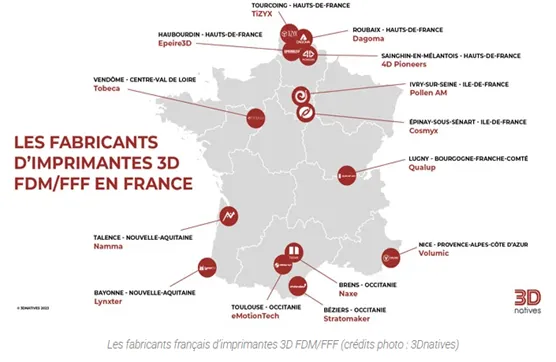
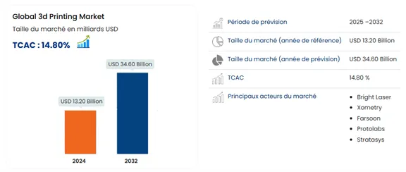
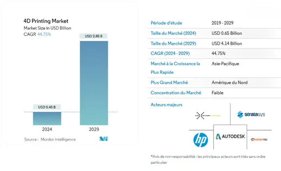
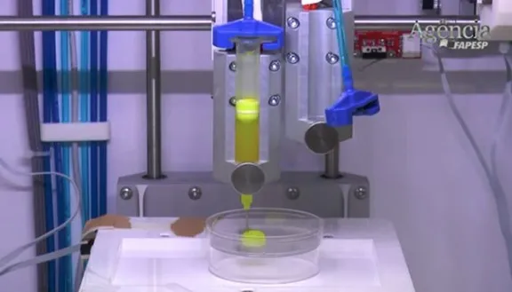
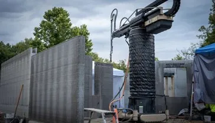
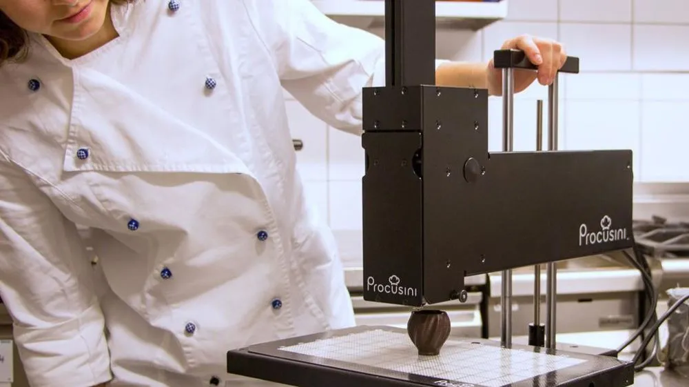
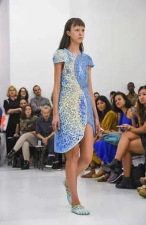

1. C'est quoi l'impression 3D et 4D ?
L'impression 3D
Consiste à créer un objet en ajoutant de la matière couche par couche, à partir d'un modèle numérique. Elle est utilisée pour fabriquer rapidement des pièces, des prototypes ou même des produits finis.
Principales techniques
- FDM (dépôt de filament fondu) : plastique, usage courant et grand public
- SLA (résine photopolymère) : grande précision, médical et joaillerie
- SLS/DMLS (frittage laser) : poudres plastiques ou métalliques, aéronautique
- MJF / Jet Fusion (HP) : production série rapide, industrie
- Bioimpression : cellules vivantes, médical et recherche
L'impression 4D
Utilise les mêmes principes que l'impression 3D, mais avec des matériaux spéciaux qui réagissent à des changements environnementaux. La 4e dimension, ici, c'est le temps : l'objet imprimé évolue après sa fabrication.
Stimuli déclencheurs
- Température (se plier avec la chaleur)
- Humidité (se déployer au contact de l'eau)
- Lumière UV (contraction ou dilatation)
- Champs magnétiques ou électriques
- pH (milieu biologique)
Matériaux utilisés
- Polymères à mémoire de forme (SMP)
- Hydrogels intelligents
- Alliages thermosensibles (Nitinol)
- Composites fibres carbone actives
2. Tendances 2025
🖨️ Impression 3D — tendances
- IA générative et conception : des outils comme Autodesk Generative Design ou nTopology utilisent l'IA pour optimiser automatiquement les géométries des pièces (plus légères, plus solides)
- Matériaux bio-sourcés : filaments à base de PLA renforcé, chanvre, lin ou amidon de maïs pour réduire l'empreinte carbone
- Impression métal grande vitesse : les procédés DED (Directed Energy Deposition) permettent de fabriquer ou réparer de grandes pièces métalliques directement en atelier
- Industrialisation de la série : la frontière entre prototypage et production série s'efface dans l'automobile et l'aéronautique
🔮 Impression 4D — tendances
- Médecine régénérative : stents, implants osseux et trachées artificielles capables de se reconfigurer in vivo
- Spatial : antennes et panneaux solaires se déployant automatiquement en orbite
- Soft robotics : robots souples sans moteur, actionnés par stimuli thermiques ou chimiques
- Textile intelligent : fibres qui s'adaptent à la transpiration ou à la température du corps
- Architecture adaptive : façades de bâtiments qui s'ouvrent ou se ferment selon l'ensoleillement
3. Quels outils sont utilisés ?
🖥️ Logiciels de conception (CAO)
Fusion 360 (Autodesk) — polyvalent, utilisé en industrie et formation.
SolidWorks — référence en ingénierie mécanique industrielle.
Cura — logiciel de tranchage open source, standard pour FDM.
Bambu Studio / PrusaSlicer — slicers modernes pour imprimantes grand public.
Materialise Magics — traitement de fichiers STL professionnel.
🔬 Logiciels de simulation 4D
Abaqus (Dassault Systèmes) — simulation mécanique avancée, prédit le comportement des matériaux actifs.
ANSYS — simulation multiphysique (thermique, mécanique, fluides).
COMSOL Multiphysics — modélisation des stimuli environnementaux sur les matériaux intelligents.
⚙️ Technologies d'impression
FDM — filament plastique, accessible, grand public et PME.
SLA / DLP — résine UV, haute précision, médical et dentaire.
SLS / MJF — frittage laser ou jet, pièces fonctionnelles sans support.
DMLS / EBM — métaux (titane, inconel), aéronautique et médical.
DED / WAAM — dépôt de métal fondu, réparation de grandes pièces.
Carte des fabricants français
Principaux fabricants d'imprimantes 3D en France

4. Qui sont les acteurs importants ?
Acteurs mondiaux — impression 3D
🇺🇸 Stratasys
Pioneer de la technologie FDM (brevet fondateur). Leader mondial des imprimantes industrielles polymères. Fusion en cours avec Desktop Metal (2024) pour consolider le secteur.
🇺🇸 HP (Jet Fusion)
Technologie Multi Jet Fusion (MJF), très rapide pour la production en série. Prisée dans l'automobile et l'aéronautique. Partenaire de grands constructeurs dont BMW et Volkswagen.
🇺🇸 3D Systems
Inventeur de la stéréolithographie (SLA). Large portefeuille : polymères, métaux, bio-impression. Fort en médical avec la production de prothèses et guides chirurgicaux sur mesure.
🇺🇸 Formlabs
Leader de la résine SLA/SLS compacte pour les professionnels (médical, dentaire, joaillerie). Rachat de Dental Products Lab (2024). Forte croissance dans les solutions métiers.
🇺🇸 Carbon
Technologie CLIP (résine UV + lumière), très rapide. Partenaire d'Adidas pour les semelles de chaussures de sport imprimées en série. Déploiement médical et dentaire en progression.
🇨🇳 Bambu Lab
Acteur chinois émergent, devenu en 3 ans le leader du marché FDM grand public et semi-professionnel. Machines rapides, fiables, abordables. Bouscule Prusa et UltiMaker sur leur terrain.
Acteurs clés — impression 4D
- MIT Self-Assembly Lab (Skylar Tibbits) — laboratoire pionnier de l'impression 4D, à l'origine du concept en 2013. Travaux sur les matériaux programmables et l'auto-assemblage.
- Harvard Wyss Institute — recherche avancée en bio-impression 4D et soft robotics.
- Materialise (Belgique) — prestataire de services d'impression 3D/4D pour la santé et l'industrie, coté en bourse.
- Stratasys + J750 — imprimante multi-matériaux permettant des combinaisons rigide/souple, base de nombreuses recherches 4D.
- Startups : Inkbit (impression 4D à jets d'encre), Allevi (bio-impression), Azul 3D (fabrication continue ultra-rapide).
Acteurs français
- Prodways (groupe Gorgé) — fabricant et prestataire français, fort en médical (prothèses dentaires, orthopédie).
- AddUp (Michelin + Fives) — spécialiste français de l'impression métal (LPBF), dédié à l'industrie aéronautique et automobile.
- Sculpteo (rachat BASF) — service de fabrication à la demande, production en France.
- Lynxter — imprimantes 3D industrielles polyvalentes (polymères, silicone, matériaux techniques), basé à Bayonne.
5. Le marché des imprimantes 3D et 4D
a) Les imprimantes 3D
La croissance est tirée par plusieurs facteurs convergents : l'industrialisation de la production en série (automobile, aéronautique), le développement du médical sur mesure (prothèses, implants), les matériaux bio-sourcés, et l'essor des imprimantes de bureau accessibles aux PME et aux particuliers. L'intégration de l'IA dans les logiciels de conception accélère encore l'adoption.

b) Les imprimantes 4D
Le marché de l'impression 4D reste émergent mais croît très rapidement, porté par les secteurs médical, spatial et défense. Les progrès dans la fabrication des matériaux intelligents (polymères à mémoire de forme, hydrogels) sont le principal moteur de cette croissance.

6. L'impression 3D dans l'industrie automobile
L'industrie automobile est l'un des secteurs qui utilise le plus l'impression 3D, à toutes les étapes du cycle de vie d'un véhicule.
🔧 Prototypage rapide
Fabrication de maquettes et prototypes fonctionnels en quelques heures au lieu de plusieurs semaines. Permet de valider un design ou tester une pièce avant d'investir dans des outillages coûteux.
🏭 Outillage de production
Gabarits, jigs, préhenseurs de robots et outillages spéciaux fabriqués à la demande en 3D. Coût 5 à 10 fois inférieur à l'usinage traditionnel. Adopté massivement par Renault, Stellantis, BMW.
🏎️ Pièces de rechange & compétition
Fabrication à la demande de pièces rares ou obsolètes. En compétition (F1, WRC), des pièces aérodynamiques sont imprimées nuit et jour pour être montées le lendemain matin.
🧪 Pièces finales légères
Production de pièces intérieures complexes (clips, conduits d'air, supports de câbles) en série directement par impression 3D. Lamborghini, BMW et Volkswagen ont intégré des pièces imprimées dans leurs modèles de production.
7. Aujourd'hui et demain
🫀 Organes bio-imprimés
En 2024, des équipes de recherche ont franchi un cap majeur avec des mini-reins fonctionnels vascularisés et des cornées humaines imprimées. La bio-impression pourrait résoudre la pénurie de greffons d'ici 2030.

🏠 Maisons et bâtiments imprimés
Aux Pays-Bas, une dizaine de maisons habitées sont déjà entièrement imprimées en béton. Au Texas, la startup ICON imprime des quartiers résidentiels entiers. En France, Nantes a inauguré la première maison imprimée en 3D habitée en 2018.

🍕 Alimentation et cuisine 3D
Des imprimantes alimentaires permettent de créer des formes complexes en chocolat, pâte à sucre ou purées protéinées. Des hôpitaux utilisent l'impression alimentaire pour adapter les textures aux patients dysphasiques.

👗 Vêtements et textiles intelligents
Adidas Carbon imprime des semelles de chaussures en série (Futurecraft). En 4D, des chercheurs du MIT développent des vêtements qui s'ouvrent et se ferment automatiquement en fonction de la transpiration, sans électronique.

Les grandes perspectives d'ici 2030
- Impression 3D dans l'espace : la NASA et l'ESA expérimentent l'impression de pièces de rechange directement à bord de la Station Spatiale Internationale (ISS), évitant des ravitaillements coûteux.
- Décarbonation industrielle : la fabrication additive réduit les déchets de matière de 70 à 90 % par rapport à l'usinage soustractif (fraiseuse, tour), ce qui en fait un levier clé de la transition écologique industrielle.
- Démocratisation du médical sur mesure : prothèses dentaires, attelles orthopédiques et aides auditives imprimées sur mesure en cabinet, réduisant délais et coûts pour les patients.
- Impression multi-matériaux : les imprimantes de nouvelle génération combinent plastique, métal, silicone et électronique en un seul passage, ouvrant la voie à des objets « intelligents de naissance ».
L'impression 3D et 4D convergent vers une seule vision : fabriquer exactement ce dont on a besoin, où on en a besoin, quand on en a besoin — sans déchets, sans délai, sans compromis.